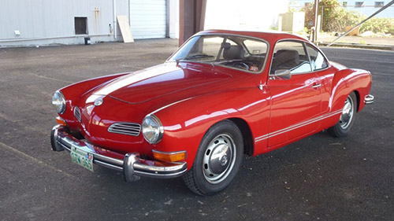
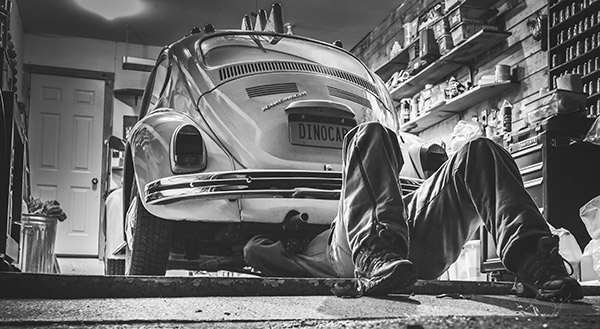

"When you do a car rapair to a beetle, you see a response from the car. The car responds to the love you give it. A modern car is a lot of plastic and metal, it has nothing to do with it. The beetle seems to be alive. In addition to that, repairing a beetle is an activity that acts as mental hygiene." ~ Marcelo Tonella.
I really could verify the words of Tonella by myself. The experience of owning an old VW is entirely satisfactory. It is incredible how the German air-cooled project is so simple, and at the same time so efficient and functional. It has the imprint of an era that no longer exists, in which things were made to last indefinitely. ~ The author.